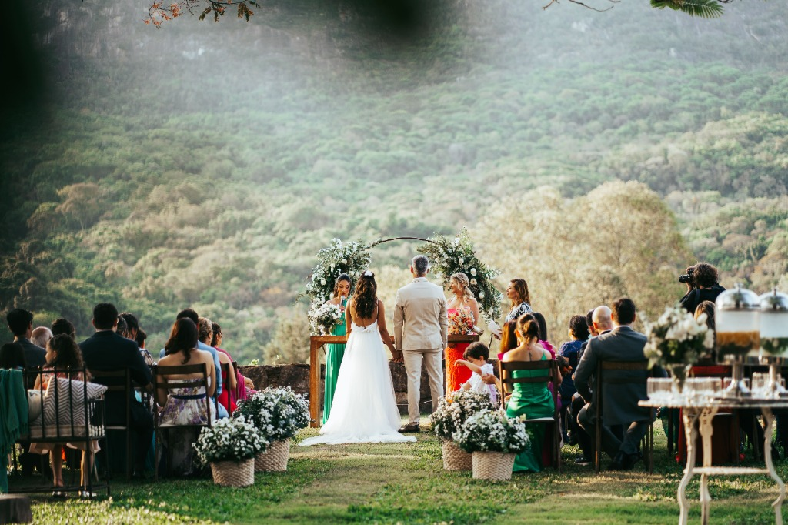
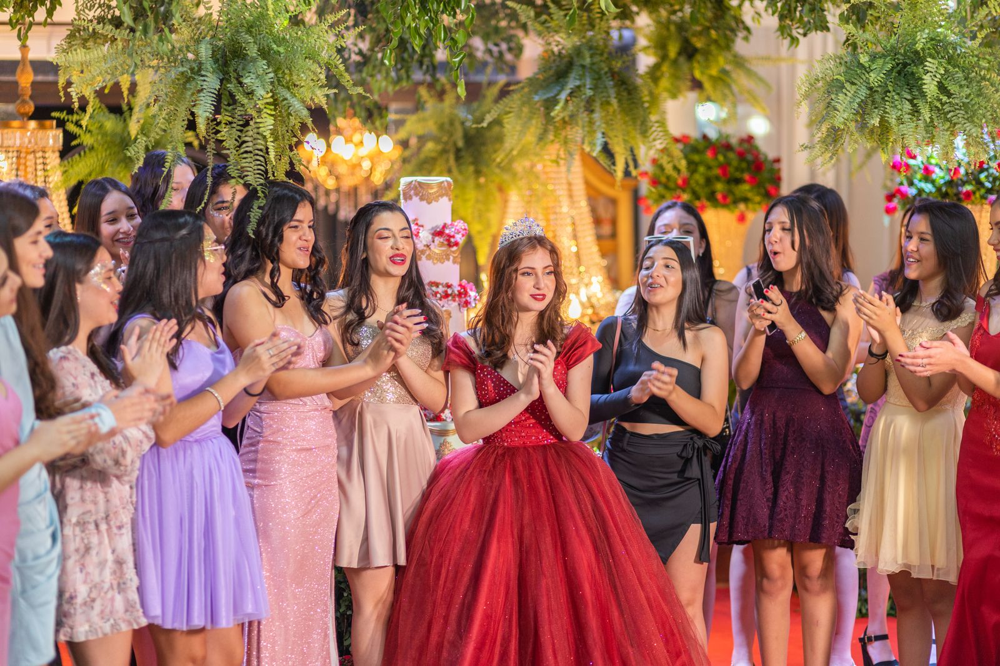
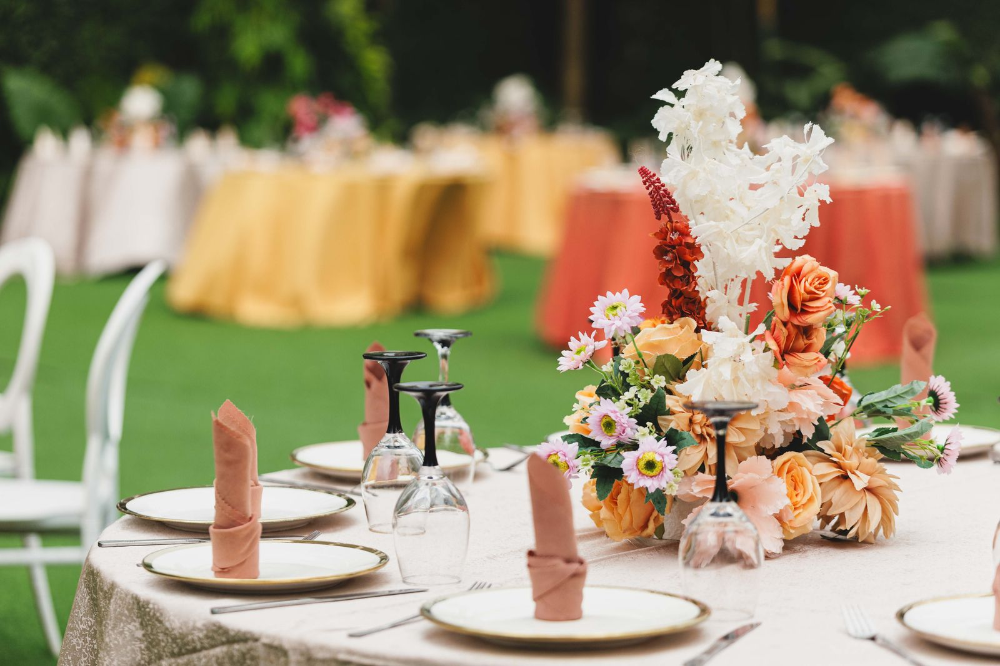
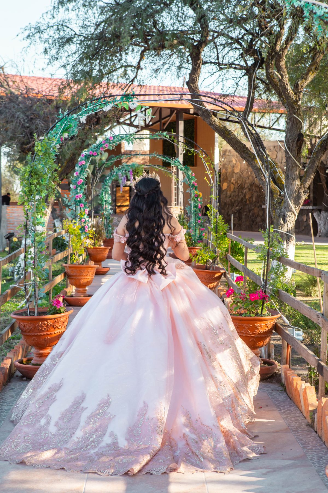
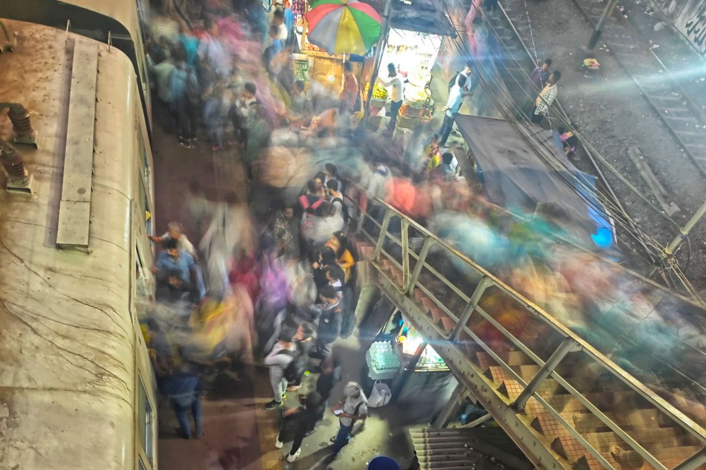
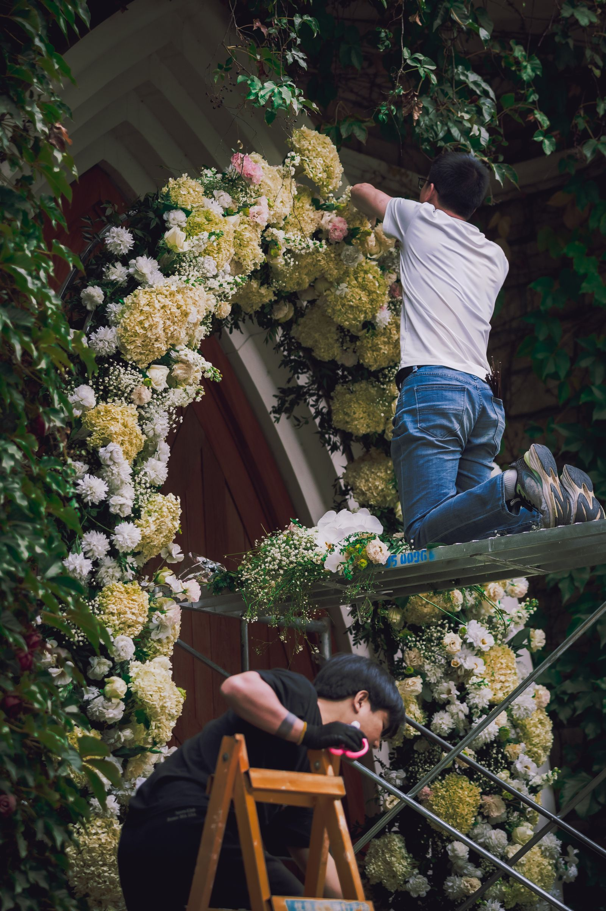
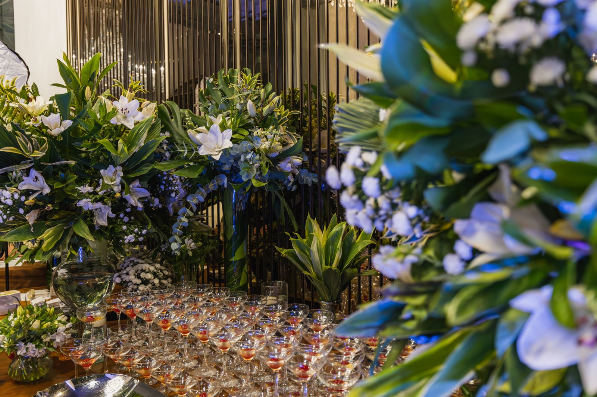
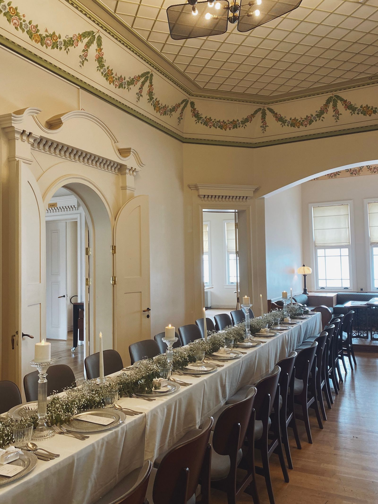

Vision & Heritage
We sit down with the celebrant and her parents to map out aesthetic dreams, color palettes, gown inspirations, and family traditions to honor.
- Theme, palette & mood board
- Ceremony & mass planning
- Realistic budget allocation

ABOUT OUR STUDIO
We help families turn a once-in-a-lifetime coming-of-age milestone into a celebration that feels deeply personal, culturally meaningful, and seamlessly organized.
OUR EXPERIENCE
Since 2012, our boutique planning house has focused exclusively on Quinceañeras and Sweet Sixteens. We understand the delicate balance between timeless cultural customs, family heritage, and modern teenage style.
OUR STORY
Our journey began with a simple belief: a young woman's coming-of-age celebration deserves the exact same architectural planning, artistic curation, and calm production as a luxury wedding.

A celebration is far more than a ballroom and a playlist. It is a moment where grandparents, parents, padrinos, and friends gather to honor generational love, family blessings, and the celebrant's bright future.
Whether coordinating a formal Catholic thanksgiving mass, the presentation of the Last Doll (La Última Muñeca), the symbolic Changing of the Shoes (El Cambio de Zapatos), the Coronation with her tiara, or the emotional Father-Daughter Waltz, our directors protect each tradition with deep cultural reverence and flawless timing.
HOW WE DO IT
From the initial brainstorm to the final send-off, our proven four-phase roadmap ensures no detail is overlooked, no budget is strained, and no family is stressed.
We sit down with the celebrant and her parents to map out aesthetic dreams, color palettes, gown inspirations, and family traditions to honor.
We match your family with trusted ballrooms, floral sculptors, caterers, photographers, DJs, and lighting artists aligned with your tastes.
We organize rehearsals for the Court of Honor (Damas & Chambelanes), coach speeches, and construct a precise, minute-by-minute run-of-show.
Two dedicated planners on site from 8:00 AM through last cleanup. We oversee vendor load-in, manage timing, and let you enjoy the celebration.
WHAT GUIDES US
Every decision we recommend is guided by four standards that keep planning grounded and the party unforgettable.

RECENT PROJECTS
Explore some of the recent Quinceañeras and Sweet Sixteens curated by our team, each tailored to the celebrant’s unique vision and family story.

Cascading wisteria floral arches, live harpist entrance, a customized eight-couple court waltz, candlelit terrace seating, and an artisan blush dessert bar.

A classic royal blue and gold affair honoring traditional Catholic mass coordination, coronation tiara blessing, shoe change ceremony, and a high-energy bilingual DJ set.
Metropolitan chic aesthetic featuring ambient candlelit lounge seating, an interactive mirror photo booth, curated mocktail bar, and a sparkler send-off finale.
FAMILY FEEDBACK
The greatest reward of our work is seeing parents relax and celebrants radiate confidence on their milestone day.
"Planning our daughter Sofia's Quinceañera with 200 relatives traveling from across the country felt impossible until we hired this team. They organized every contract, kept our daughter feeling heard, and on celebration day, my husband and I danced without ever checking the time."
"Our court of honor had 14 teenagers who had never danced a waltz. Our planner was patient, organized, and made every rehearsal fun. When the ballroom doors opened and I saw the flowers, lighting, and candles, it took my breath away. It was the happiest night of my life!"
"What impressed us most was their absolute budget transparency. No surprise invoices, no vendor markups—just honest guidance on where to invest for maximum guest impact. Their minute-by-minute timeline coordination was executed like clockwork."
HOW WE WORK TOGETHER
Your family owns the choices. We help gather options, organize details, and keep the plan moving.



CONTINUE EXPLORING
Schedule an introductory conversation with our planning directors or compare package options.